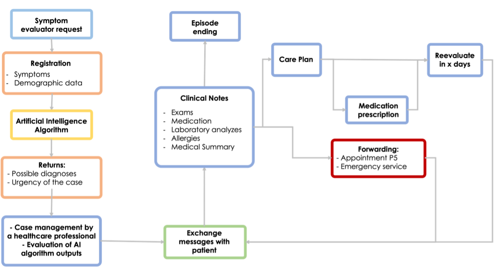
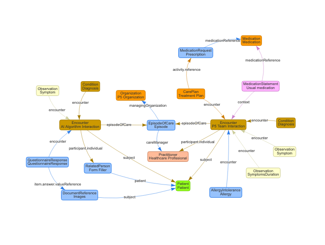

HL7 PT FHIR Implementation Guide: Community Health
1.0.1 - STU1

HL7 PT FHIR Implementation Guide: Community Health
1.0.1 - STU1

HL7 PT FHIR Implementation Guide: Community Health, published by HL7 Portugal. This guide is not an authorized publication; it is the continuous build for version 1.0.1 built by the FHIR (HL7® FHIR® Standard) CI Build. This version is based on the current content of https://github.com/hl7-pt/community-health-ig/tree/master and changes regularly. See the Directory of published versions
Na aplicação clínica de triagem e aconselhamento, o sistema de triagem é projetado para receber informações de um paciente. Essas informações são então transmitidas a um algoritmo de inteligência artificial (IA), que posteriormente fornece um ou mais diagnósticos potenciais. Durante esse encontro inicial, os sintomas do paciente e algumas informações demográficas são registrados.
Após isso, um profissional de saúde examina o caso e avalia o diagnóstico identificado pelo sistema de IA. Subsequentemente, o prestador de saúde entra em contato com o paciente para obter mais detalhes, incluindo prescrições frequentes, alergias e quaisquer outras informações relevantes necessárias para abordar o problema. Após a comunicação com o paciente, um plano de tratamento é formulado, abrangendo prescrições potenciais ou encaminhamentos para serviços ambulatoriais, consultas ou até mesmo serviços de emergência, conforme considerado apropriado.
Esse fluxo de trabalho está descrito na Figura 1.
Fluxo de Trabalho do Avaliador de Sintomas

Na Figura 2 está representado o mapeamento de recursos FHIR para este cenário. A imagem ilustra a integração e o fluxo de dados entre diferentes entidades e processos em um sistema de triagem que utiliza inteligência artificial.
FHIR Resources Workflow

Na aplicação do avaliador de sintomas, o sistema de triagem é projetado para receber informações de um paciente e, em seguida, processá-las por meio de um algoritmo de inteligência artificial que fornece um ou mais diagnósticos possíveis. Durante esse encontro inicial, essas informações são registradas como Observations, que documentam aspectos relevantes, como o tipo de sintomas e duração. Essas observações são vinculadas a um Encounter específico, denominado AI Algortihm Interaction, indicando a fase inicial de coleta de dados.
O diagnóstico inicial, identificado pelo algoritmo de IA e representado como uma Condition, é então revisado por um profissional de saúde, representado no mapa como Healthcare Profisional. Essa fase de interação com o profissional de saúde é representada por um segundo Encounter, denominado P5 Team Interaction, que reflete o envolvimento de uma equipe de saúde na revisão e no aprofundamento do diagnóstico e no planejamento do cuidado do paciente. A partir dessa avaliação mais abrangente, o profissional de saúde desenvolve um Plano de Cuidados (CarePlan) personalizado. Esse plano pode incluir diversas intervenções, como novas prescrições de medicamentos (registradas como MedicationRequest), encaminhamentos para serviços ambulatoriais, consultas especializadas ou, se necessário, cuidados de emergência.
O plano de cuidados, junto com todos os dados relacionados aos encontros iniciais e secundários, é agrupado em um EpisodeOfCare. Esse episodio abrange toda a jornada do paciente, desde a triagem inicial dos sintomas até a ao momento de alta. Ele garante que todas as interações, diagnósticos e tratamentos sejam gerenciados de forma integrada e coesa.
O fluxo de trabalho utiliza o padrão FHIR (Fast Healthcare Interoperability Resources) para garantir que os dados clínicos sejam registrados de maneira estruturada e interoperável. Isso possibilita o compartilhamento de informações entre diferentes sistemas de saúde, assegurando que os dados do paciente estejam acessíveis a todos os envolvidos no cuidado, sem comprometer a integridade e rastreabilidade das informações.
É importante salientar que todos os recursos estão associados ao recurso Patient. Esse detalhe foi omitido na representação gráfica para evitar um número excessivo de ligações representadas, o que poderia desviar a atenção do essencial.